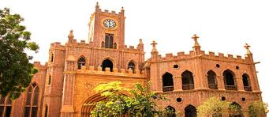
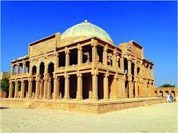
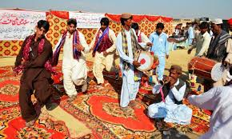
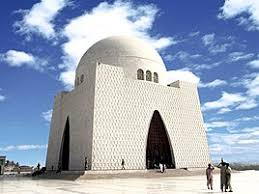

Sindh is a province in southern Pakistan, known for its rich cultural heritage and historical significance. The Indus River flows through Sindh, supporting agriculture and sustaining its ancient civilizations. Karachi, the provincial capital, is the largest city in Pakistan and a major economic hub. Sindhi culture is vibrant, characterized by traditional music, dance, and colorful handicrafts. The province is famous for its Sufi shrines, which attract pilgrims from across the country. Festivals like Cheti Chand celebrate the Sindhi New Year, showcasing the region's traditions. Sindh's cuisine features delicious dishes such as Sindhi biryani and Sindhi curry. The language spoken here, Sindhi, has a rich literary history. The region's diverse landscape includes deserts, plains, and coastal areas along the Arabian Sea. Sindh remains a crucial part of Pakistan’s identity and cultural diversity.
Certainly! Here are a few more lines about Sindh: Sindh has a rich archaeological history, with sites like Mohenjo-Daro, one of the world's earliest urban settlements from the Indus Valley Civilization. The province is known for its traditional crafts, including ajrak (a block-printed fabric) and pottery. Sindh is also home to vibrant bazaars where artisans showcase their skills. The region has a significant population of various ethnic communities, contributing to its cultural mosaic. Agriculture plays a vital role in Sindh’s economy, with rice, sugarcane, and cotton being key crops. Sindhi literature boasts renowned poets and writers, reflecting the province’s deep philosophical and spiritual roots. The warm hospitality of Sindhi people is famous, making visitors feel welcomed. Despite modern challenges, Sindh continues to celebrate its heritage through art, music, and festivals.
|  |  |  |  |
|---|